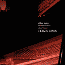

|  Aidan
Baker / Thomas Baker / Alan Bloor
"Terza Rima"
CDR
Public
Eyesore
Genres: ambient, experimental, improv
Bryan Day / PE
3803 S 25th St.
Omaha, NE 68107
Jun 30 - Jul 6 2003 |
The
Terza Rima CDR is a recording of a live performance from the
Ambient Ping Series, which took place in (my very hometown of) Toronto,
Canada. It is divided into three pieces, none of which are
shorter than seventeen minutes.
The first piece is the eerie "Pentrametrical," which
takes a glitchy, metallic sound and lays a dark ambiance over
it. When the sparse piano gradually comes in, the
resulting noise is slightly more tuneful, yet still creepy and spaced out. Eventually it turns into a mysterious, almost psychedelic
sound sculpture that feels as if it could be the score to a very
offbeat film (Fear and Loathing in Las Vegas came to mind).
The second track is "Interlaced Rhyme Scheme," a thirty
minute epic that spans through ambiance, sampling, and almost jazzy
piano playing. It's an amazing, accomplished piece that's both bizarre and mesmerizing.
The final piece is "Tertiary," which starts off with
frantic piano doodling, but then dissolves into ambient guitar
abstraction, only to disintegrate further into a throbbing electronic
/ piano tinkling finale that slowly fades into silence, followed by
the restrained clapping of a disembodied audience. Genius.
Altogether, this is a terrific release of experimental improv and
ambient avant-garde music. Those interested in the genres are
encouraged to give Terza Rima a try, they won't be
disappointed.
85%
Matt Shimmer [Vitals:
3 tracks, distributed by the
label, released 2003] |